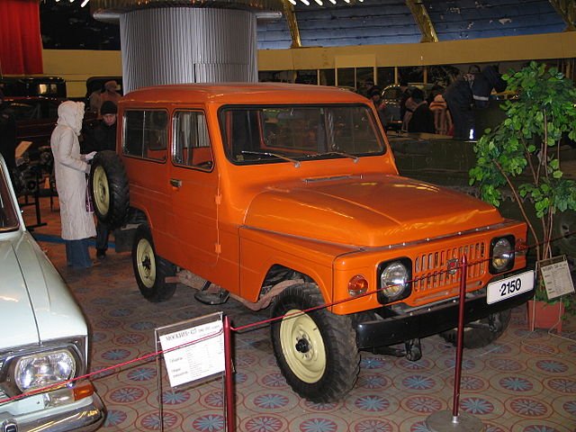
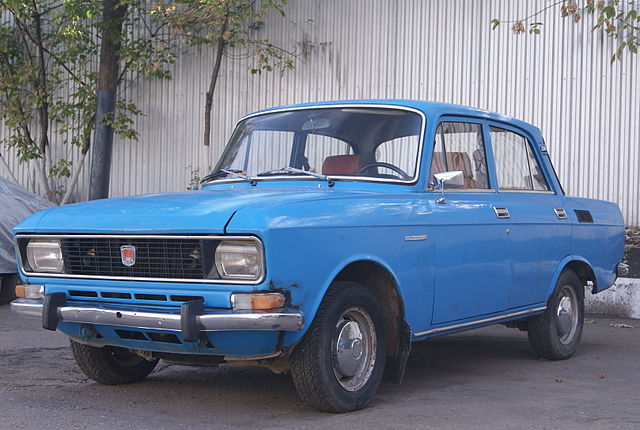

У вересні 1971 року утворено виробниче об'єднання «Авто-Москвич».
У 1974 році з головного конвеєра заводу зійшов двомільйонний автомобіль Москвич, ним став автомобіль Москвич-412.
На початку 70-х років на АЗЛК вирішили реанімувати проект позашляховика Москвич-416 розробки 50-х років. Оновлену модель назвали Москвич-2150, встановили на неї двигун М-412, але далі дослідних зразків справа не пішла.

Москвич 2150
Також в 70-х велася робота із створення наступника Москвича-412. Були створені дослідні зразки. Але через організаційні суперечності усередині заводу, нова серійна модель запізнювалася.
Було ухвалено рішення про модернізацію Москвича-412. Автомобіль Москвич-2140, що з'явився в 1976 році, був результатом глибокого рестайлінгу М-412. Автомобіль був морально застарілим для 70-х років. А акцент конструкторських робіт змістився у бік створення передньоприводних моделей.

Москвич 2140